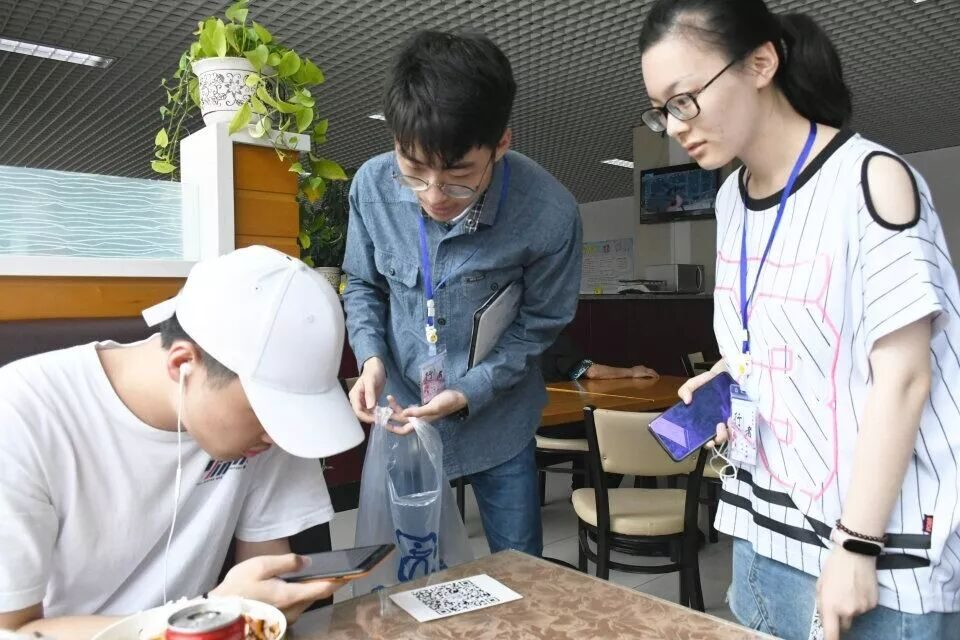
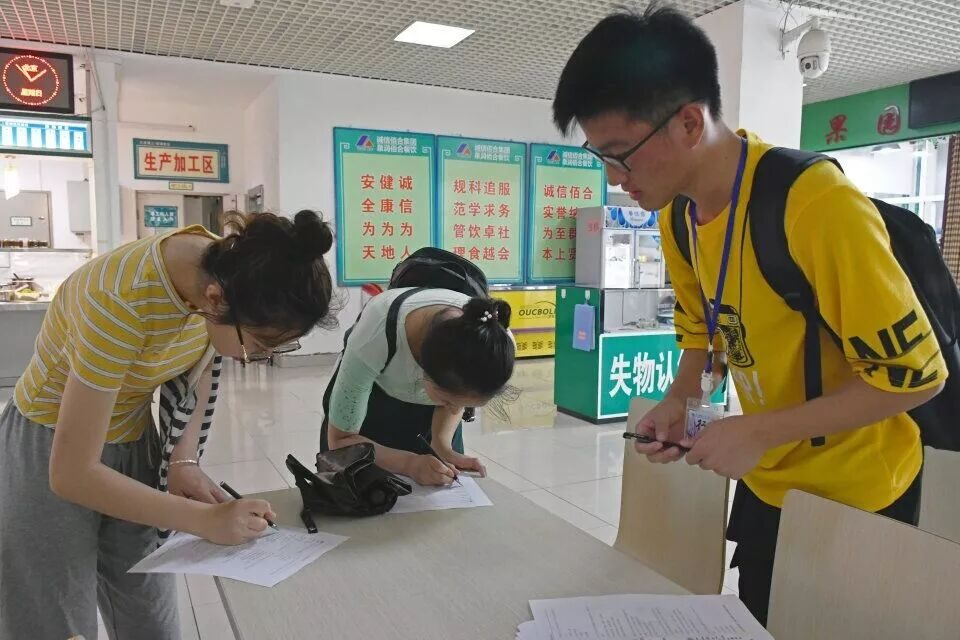
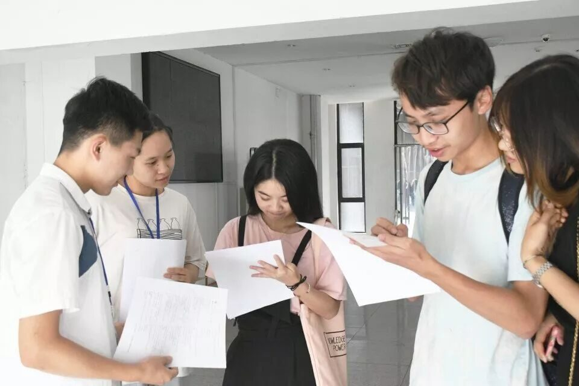
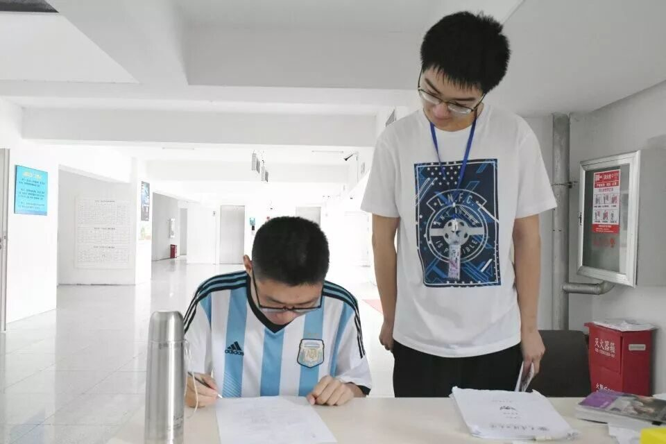
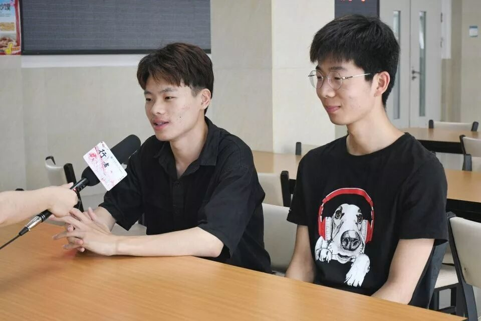
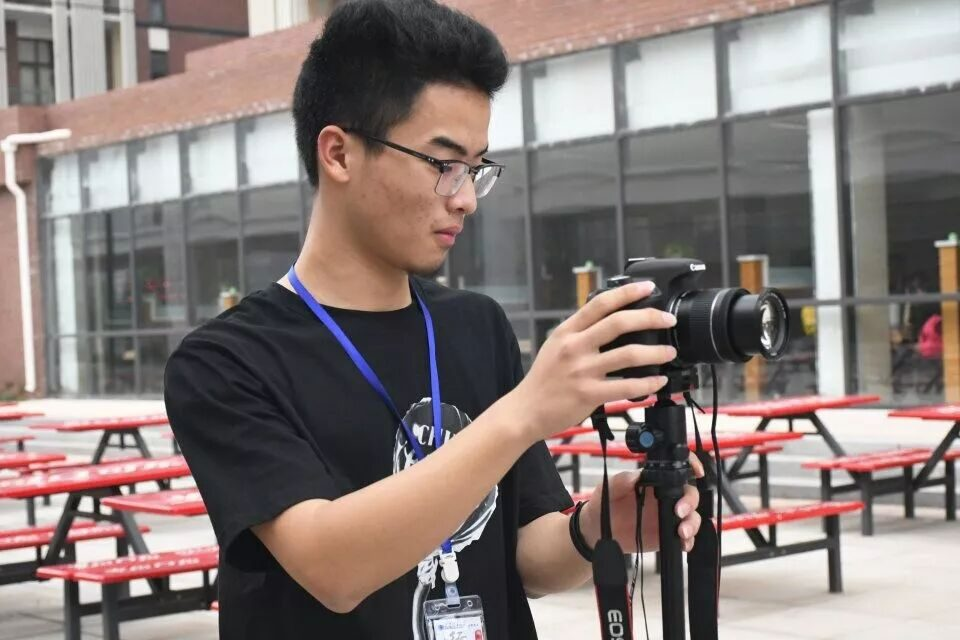
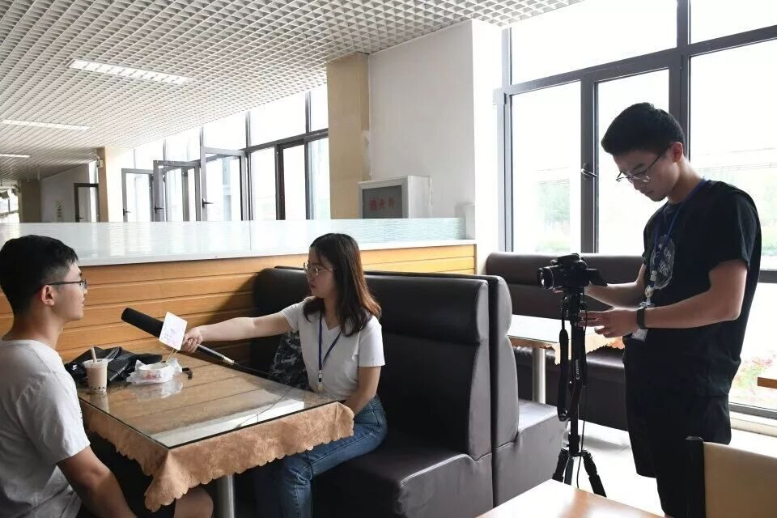

【行者无疆·源洄渝州】 校园采访活动顺利结束！

咬着0.5毫米黑色签字笔尖，
我独自彷徨在这无可挑剔的问卷前，
每个完美的答案，我都要找到放心间。
她能总和我过往的经历经验，
将我大工“求实创新”的精神体现彰显。


不识重庆真面目，只缘没有发问卷。无论是填写纸质问卷亦或扫描二维码填写网上问卷，当答案汇总、结果出炉，都坚定了我们深挖重庆英雄文化的决心和将巴渝文化在市井弄巷升斗小民中的体现逐一找寻的勇气。


校园采访篇
一千个人心中有一千个哈姆雷特，以巴渝文化的民歌声声傩舞翩翩为底，英雄文化的英气逼人荡气回肠为墨，新兴的网红文化为笔而谱写出的重庆山城锦绣当从更多角度被我们探寻挖掘。“请问你觉得重庆被称作网红城市的原因是什么”“请问你觉得可以通过什么方式使传统文化回潮”，递出麦克风，你一字一句诉说重庆文化在你心间留下的光与影，我一笔一划记下你心中的重庆模样。


经倾听而将调研方向
予以调整求证，
经思索而将调研内容
予以丰富充实，
经采访而将调研主题
予以传播推广。
一问一答间，重庆文化已不再是纸页间的象形文字或是那视频中的粗略简介，她迤迤然穿过了嘉陵大桥的重重水雾漫天，越过了歌乐缙云的巍巍峰峦层叠，亭亭伫立于我们身前，向我们讲述重庆一砖一瓦下轻轻掩着的市井百态，一颦一笑里偷偷敛着的风俗民情，一花一木间悄悄藏着的草长莺飞。


两口合川桃片，
拢了思绪，
交了答卷。
抬起头，恍惚间，
嘉陵江的水雾
熏湿了眼帘。
来源丨行者无疆实践团
文字丨王耿
排版丨陈嘉颖
审核丨邓子孚 段智然
行者无疆实践团
QQ：2758025831

随行者一起认识世界
长按二维码关注